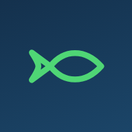
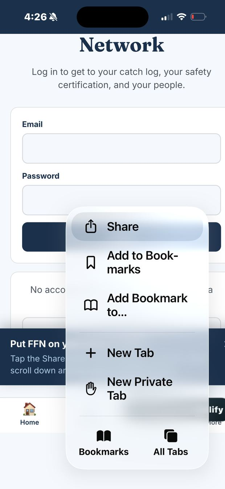
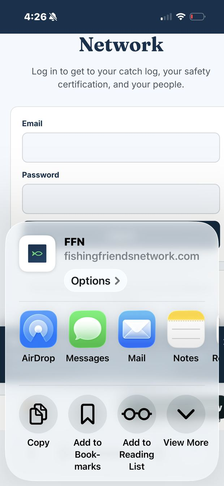
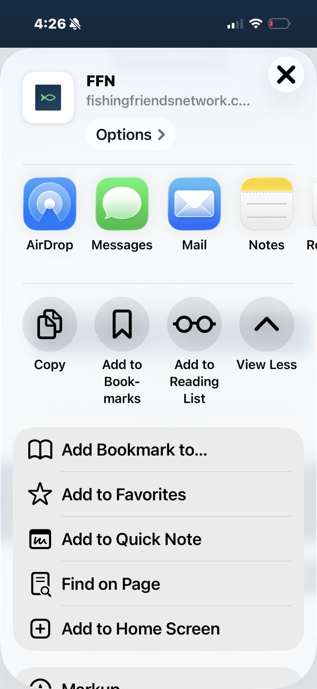
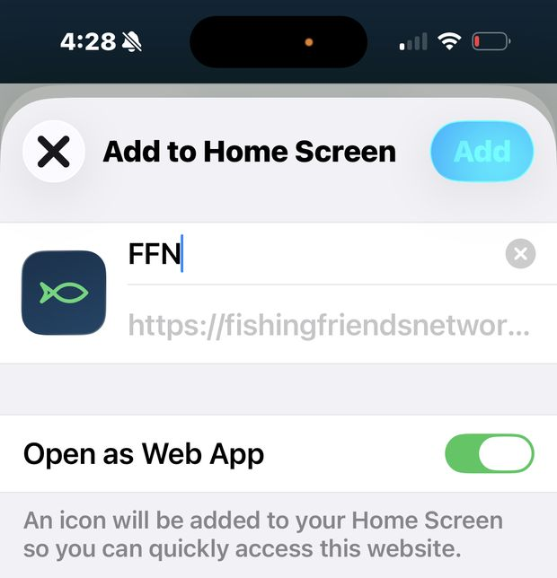

Read this part first, so nothing surprises you.
This app does not come from the App Store or the Play Store. You add it from this website instead. When you are done, an FFN icon sits on your home screen with your other apps, and tapping it opens FFN full screen with no browser bars in the way. That is the whole difference.
It is not a trick and it does not cost anything. It is just how an app like this one gets on a phone.
On an iPhone or an iPad
Do these five things in order. Use Safari, the browser Apple builds in. Chrome on an iPhone will not offer you this.
-
Open the site in Safari
Go to fishingfriendsnetwork.com in Safari. If you are reading this on your phone in Safari right now, you are already here and you can go straight to step two.

-
Tap the Share button
It is the square with an arrow pointing up out of the top of it. On an iPhone it sits at the bottom of the screen in the middle. On an iPad it sits up at the top right.
If you do not see it, scroll the page up a little and the bar comes back.

-
Scroll down and tap Add to Home Screen
A list slides up. The top row is people and apps to share with. Keep scrolling past that. Partway down the gray list you will find Add to Home Screen. Tap it.

-
Tap Add
It shows you the icon and the name it is about to use, which is FFN. You can rename it if you want. Then tap Add in the top right corner.

-
Open it from your home screen
Look at your home screen. The FFN fish is sitting there with your other apps. Tap it. It opens full screen, with Home, My Log, Safety, and More across the bottom.
That is it. You are done. You never have to go through this again on this phone.
